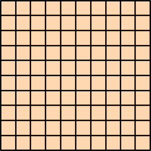
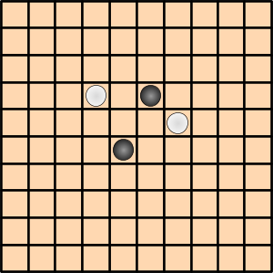
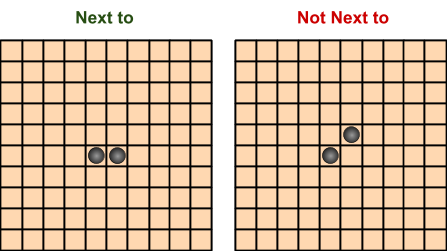
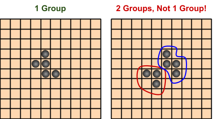
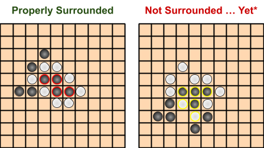

The player who has 5 pieces on the board first wins.
If a piece or group of pieces of the same color is surrounded by the opponent’s pieces, they get replaced by the opponent’s pieces.
Setup & Appearance
The game is played on a regular full-sized Go board (19x19).

One player has black pieces, and the other has white pieces. All pieces are round.
Pieces are played inside the squares on the board, as shown.

If playing in person, use the lines of a Go board instead of the squares.
Surrounding
One of the key strategies in Connect Go is to effectively surround the opponent’s pieces, so it is important that “surrounding” is well defined.
To surround a singular piece, each square next to the piece must be occupied by the opponent’s pieces.
Next to is defined as being on a game square orthogonally adjacent. Diagonally adjacent spaces are not next to.

A group is a set of pieces such that all pieces in the group are next to at least one other piece in the group contiguously.
Contiguously means that a group cannot be divided into two groups such that there is no pair of pieces from each subgroup that are not next to each other.

To surround a group, each piece in the group must be surrounded by pieces that either belong to the opponent or to the group.

* Note: in the second figure, black’s group (highlighted yellow) is not surrounded yet, but may be surrounded in one move if black does not surround white’s pieces (also highlighted yellow) on the next turn.
Other Rules
Black goes first.
When a group or piece is surrounded by opponent pieces at any time, they are automatically switched out for the opponent’s color pieces. This does not use either players’ turn.
5-in-a-row can be made horizontally, vertically, or diagonally.
If the switching colors of a surrounded group causes either player to gain a 5-in-a-row, the player that got the 5-in-a-row wins immediately.